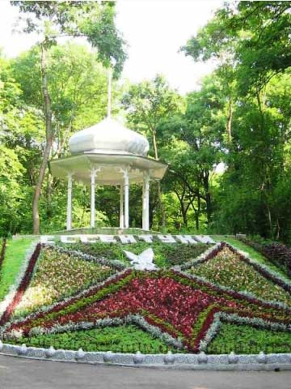
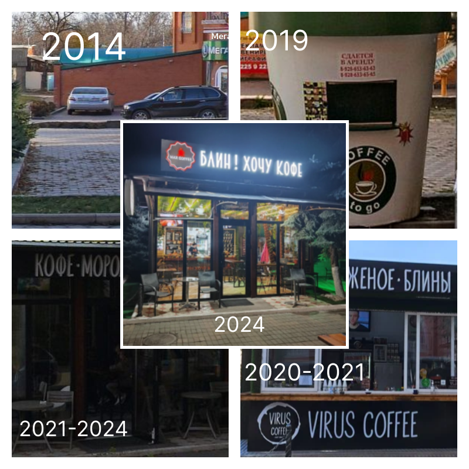

Путеводитель по городу...
Обращение к читателям
Рада приветствовать всех тех, кто захотел узнать город Ессентуки получше! В этом путеводителе будет рассказано о лучших развлекательных заведениях и достопримечательностях города Ессентуки! А ещё в этом путеводителе будет затрагиваться вопрос о том, какие потребности смогут закрыть туристы при посещении того или иного развлекательного заведения. Также в этом путеводителе раскроется ответ на следующий вопрос: "Какой возрастной категории туристов сильнее всего понравится проводить время при посещении того или иного развлекательного заведения?"
Озеро
Главным украшением города Ессентуки является озеро. Здесь можно устроить семейный отдых и дать себе возможность на время забыть о ежедневной суете. Настоящей находкой для любителей рыбалки является то, что в водоёме водится много видов рыб. Неподалёку от озера расположен сквер, который поражает своим великолепием. Благодаря скверу на озеро можно приходить не только летом, но и весной и осенью. Для любителей проводить время с пользой на территории озера есть спортивные тренажёры. Также на территории озера можно арендовать небольшие домики с мангалами. Эта возможность очень обрадует любителей шашлыков. Также аренда домиков подойдёт для тех, кто не любит загорать и предпочитает наслаждаться пейзажем озера в тени. Ещё на территории озера есть несколько детских площадок и батутов. А также в различных небольших ларьках и киосках можно приобрести еду и напитки. Глубина самого водоёма составляет 5 метров. Также около водоёма можно встретить уток, которых можно кормить хлебом. Водоём является рукотворным. В качестве доказательства этого факта прикрепляю иллюстрацию, на которой изображено благоустройство озера:

Когда мы с семьёй решили поехать на озеро во время его благоустройства, то, если честно у меня было такое же недоумение, как у персонажа на фотографии. Мы с семьёй посещаем Ессентукское озеро уже много лет с целью отдохнуть и приятно провести время.
Думаю, что поход на озеро будет интересен поколению Y и поколению Z, потому что коже поколения Х загар может навредить.
Также Ессентукское озеро посещают не только люди, которые пришли с целью отдохнуть, но и приезжают отряды, которые принимают участие в детских оздоровительных лагерях.
А ещё на Ессентукском озере можно взять на прокат катамаран, покататься на банане или просто прогуляться по набережной, любуясь изумительными видами.
Посещение Ессентукского озера закрывает следующие потребности: потребность в принадлежности к чему-то грандиозному и потребность в эстетическом наслаждении.
Адрес: г. Ессентуки, ул. Озерная, 2.
Дом Культуры
Однажды меня и моих родителей, знакомые несколько раз приглашали в Городской Дом Культуры на концерт коллектива "Цветные сны". Выступление мне очень понравилось. Меня поражала красиво подобранная музыка и синхронные движения актёров. После выступления остались яркие впечатления, и захотелось полюбоваться этим зрелищем ещё раз. В здании Дома Культуры 2 этажа. На 1 этаже расположены несколько залов, в которых проходят выступления, а на 2 этаже расположена выставка, на которой можно увидеть рисунки. На 2 этаже, тоже проходят выступления. Также на протяжении 10 лет в Доме Культуры существует клуб "Активное долголетие". Мне кажется, что посещение Дома Культуры подходит для закрытия следующих потребностей: потребность в познании и потребность в эстетическом наслаждении. Думаю, что посещение Дома Культуры заинтересует представителей поколения Х и Y, потому что мало кто из представителей поколения Z любит таким способом проводить своё свободное время. Адрес Дома Культуры: г. Ессентуки, ул. Оборонная, 45. График работы Дома Культуры: Пн-пт с 09:00 до 18:00. Сб. и Вс. - выходные.
Бар "Руки Вверх"
Желание побывать на ночной вечеринке может исполниться благодаря посещению бара под названием "Руки Вверх". При входе в здание бара благодаря необычной атмосфере создаётся ощущение перемещения в 90-ые. Также в этом баре присутствует и караоке – клуб. В здании 2 этажа. На территории бара для безопасности действует FC(Face Control) и DC(Dress Code). В рабочие дни в баре проводится шоу "Караоке чудес". Есть возможность скачивания меню.. Стоимость заказа песни в караоке-клубе – от 1000 рублей. Думаю, что посещение этого развлекательного заведения поможет закрыть потребности в принадлежности к группе, в эстетическом наслаждении и в самореализации. Подойдёт для представителей поколения Y. Адрес бара "Руки вверх": г. Ессентуки, ул. Вокзальная 16. Режим работы бара: Вт-сб с 18:00 до 06:00.
Кинотеатр "Дружба"
Этот кинотеатр с 2017 года радует зрителей показом мультфильмов и фильмов. За действиями персонажей фильмов и мультфильмов можно наблюдать в 5 залах кинотеатра. В здании кинотеатра есть 2 этажа, санитарные комнаты, детские игровые зоны, кассы для покупки билетов, еды и напитков, удобные диваны и телевизор, на котором зрители могут увидеть трейлеры фильмов и мультфильмов, показ которых проводится в кинотеатре на данный момент. Также справа от здания кинотеатра есть большой экран, на котором, тоже проходит показ трейлеров различных фильмов и мультфильмов. Есть возможность безналичной оплаты за билет в кассах кинотеатра. Также можно забронировать билет на интересующий фильм или мультфильм онлайн на сайте кинотеатра. Думаю, поход в кинотеатр подходит для представителей поколения Y и представителей поколения Z, потому что у представителей поколения X может повредиться слух из-за слишком высокой громкости. Предполагаю, что поход в кинотеатр подходит для закрытия следующих потребностей: при покупке попкорна можно закрыть физиологическую потребность в голоде. Благодаря инструктажу можно закрыть потребность в безопасности. Адрес кинотеатра "Дружба": г. Ессентуки, ул. Анджиевского, 1
Антикафе "Смайл"
Антикафе – это такое место, в которое можно приносить свою еду и напитки, а платить нужно только за пребывание в здании. Цена за первый час пребывания в антикафе - 120 рублей, второй час пребывания - 90 рублей, остальные часы пребывания - 60 рублей. В антикафе есть много интересных занятий. Можно сыграть в различные виды игр. Также в антикафе есть Wi-fi, проводятся чайные церемонии, киновечера, есть возможность поиграть в приставку, и даже можно поучаствовать в квесте под названием: "Выйти из комнаты". Ещё есть и другие ролевые квесты. Думаю, что посещение антикафе может закрыть следующие потребности: потребность в принадлежности к чему-то грандиозному и потребность в эстетическом наслаждении. Предполагаю, что посещение антикафе подойдёт для представителей поколения Z и поколения Y. Адрес антикафе: г. Ессентуки, ул. Пятигорская, 96. Режим работы антикафе: ежедневно с 09:00 до 22:00.
Кинотеатр "Искра"
В кинотеатре Искра посмотреть фильмы и мультфильмы можно в большом или малом зале. Рядом с большим залом есть касса, в которой можно приобрести билеты на интересующий сеанс и специальные очки для просмотра мультфильмов в 3D-формате. Принимается оплата с помощью банковских карт. Рядом с малым залом есть мини-бар, в котором можно приобрести попкорн и напитки. Могу предположить, что поход в кинотеатр может быть интересен представителям поколения Y и поколения Z, потому что у представителей поколения X из-за громкости на сеансе может повредиться слух. При посещении кинотеатра можно закрыть следующие потребности: физиологическую потребность в голоде при покупке попкорна, потребность в принадлежности к чему-то грандиозному, потребность в познании и потребность в эстетическом наслаждении. А для авторов фильмов и мультфильмов, которые можно увидеть на больших экранах в кинотеатрах закрывается потребность в самореализации, а если у мультфильма или фильма есть много фанатов, то этот факт закрывает потребность в уважении и признании. Режим работы кинотеатра: ежедневно с 10:00 до 23:00. Адрес кинотеатра: г. Ессентуки, ул. Октябрьская, 439.
.jpg)
Кафе "Мистер Слойкин"
В здании кафе - очень уютный интерьер. Для детей есть развлекательная зона в виде небольшой детской площадки. Меню кафе состоит из следующего ассортимента: горячая выпечка, Пятигорское мороженое и напитки. Больше всего мне нравится в этом кафе приобретать беляши. Думаю, посещение "Мистер Слойкина" подойдёт для всех поколений и поможет закрыть физиологическую потребность в голоде, потребность в принадлежности к группе людей и потребность в эстетическом наслаждении. Адрес кафе "Мисте Слойкин": г. Ессентуки, ул. Красноармейская 2. Режим работы кафе: с 10:00 до 20:00.
Кофейня "Мax Coffee"
Основной ассортимент в этом кафе - это блинчики и кофе. Персонал очень вежливый. И, может быть благодаря вежливости персонала за 10 лет(2014-2024) здание кофейни прошло хороший архитектурный рост? 
Вот и всё!
Ознакомление с лучшими развлекательными заведениями города Ессентуки подошло к концу! Cпасибо за внимание!